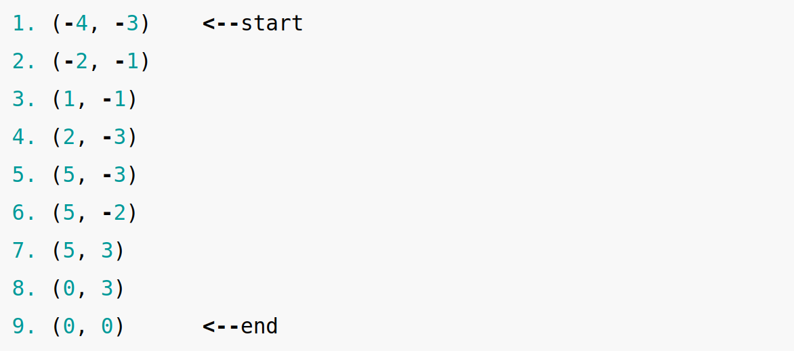
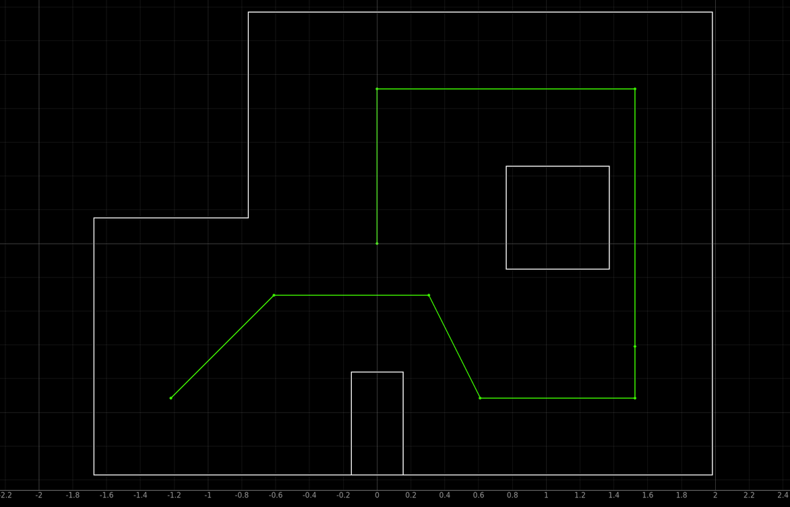
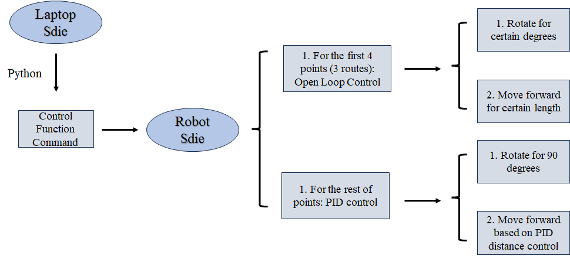
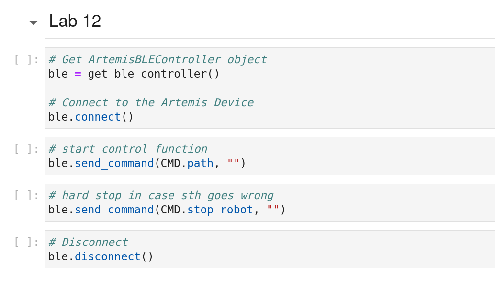

This lab is quite open-ended with the objective to make the robot go through a few points in the map area. The way points are listed as:
 Coordinates of WayPoints on the Map
The path is also shown on the simulator to make it more intuitively. It needs to be noticed that the unit in the simulator is tile.
 Coordinates of WayPoints on the simulator
Lab Task: Path Planning and Execution
In this lab I worked with Zechen Wang and Michael Wu. We collaborated to finish this lab. Appreciate their help!!!
Implementation Method
To summarize, we combined open loop control and PID control to finish this lab. The detailed process is given as below:
- The robot is manually placed on the start point
(-4, -3)with orientation0 degreesfacing east (right). - Laptop sends command to start the control case function.
- The robot spins counter clockwise for a contant time and move straight forward to the point
(-2, -1). - The robot then spin clockwise for a constant time and move straight forward to the point
(1, -1) - The robot then spin clockwise for a constant time and move straight forward to the point
(2, -3) - For the following points we decided to implement PID distance control since the routes are basically straight lines with counter clockwise spin of 90 degrees.
The flowchart diagram below demonstrates the process more intuitively.
 Flowchart Diagram of Processes
To implement the open loop control more effectively. At the end of each robot movement, a motor reverse spin is added before the stop motor function to prevent the negative influence of inertance that may let robot move more than expected.
The code snippet for the control function is attached as below:
Control FunctionIn terms of Python side, it is relatively simple, just builds the connection between robot and laptop and send the command to let robot start the control execution.
 Commands from Python
After several times of adjustment for each open loop process, distance measurement and PID test for each PID controlled point, the final robot working result is recorded as shown below. It needs to be noticed that although the robot may not move a straight line as expected because of rotor speed difference even with same PWM applied, the robot is able to pass through all the way points successfully!!! :)
Path Planning and Execution
Texts and Videos by Zhongqi Tao